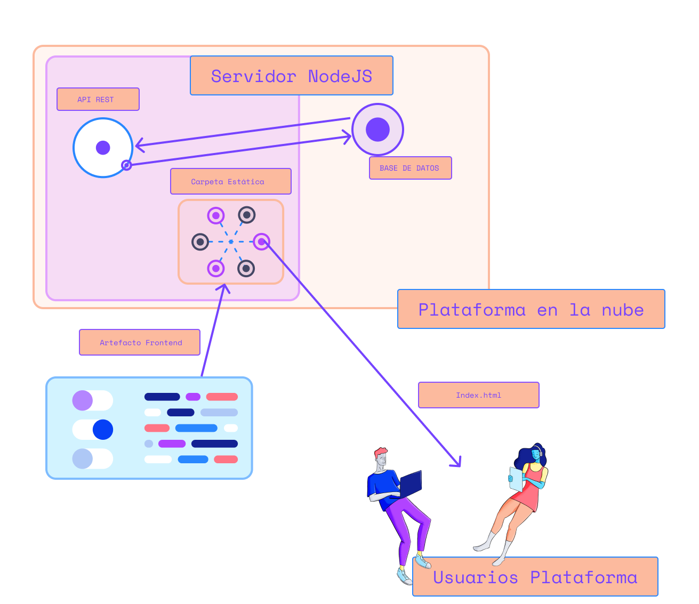

Salida a producción utilizando Github Actions y Heroku
Ha sido un largo camino en el cuál hemos construido nuestra plataforma, integrado prácticas comunes de la comunidad Javascript, prácticas relacionadas a la agilidad de Software y varias técnicas de Ingeniería para mejorar nuestro código como el uso de tecnologías en las partes Frontend y Backend. Todo esto fue con el objetivo de poder poner a disposición de los usuarios nuestra plataforma de trueques. Pero hay una pregunta que quien haya seguido estos capítulos puede estar haciendose:
¿Es acaso un buen momento para salir a producción y disponibilizar la plataforma a los usuarios?
-
La respuesta es sí.
-
Pero si solamente tenemos un método de Autenticación y una página de lista de productos.
-
OK. podemos salir a producción pero no mostrarle aún a los usuarios está página.
-
Pero es necesario estandarizar desde una etapa temprana el procedimiento de subida a producción.
Para ello hay una serie de preguntas técnicas que debemos plantearnos. Veremos si nuestra plataforma cumple al menos con los requerimiento básicos para esta etapa:
-
¿Cúal será el método por el cuál disponibilizaremos el Frontend para los usuarios de la plataforma?
-
¿Qué método de puesta en producción en servidores en la nube utilizaremos?
-
¿Qué tipo base de datos y servicio en la nube para almacenar datos utilizaremos?
-
¿Que requisitos debe cumplir el código fuente para salir a producción desde este punto en adelante?
Iremos respondiendo a cada una de estas pregunta e implementaremos lo necesario para lograr solucionar lo necesario para salir a producción sin problemas.
¿Cúal será el método por el cuál disponibilizaremos el Frontend para los usuarios de la plataforma?
En esta oportunidad utilizaremos el enfoque de WEB SERVER + API en el mismo servidor NodeJS. Esto quiere decir que debemos incluir una carpeta en el servidor que contendrá en resultado del proyecto Frontend, esto es, un archivo index.html con los archivos Javascript y CSS, así como los recursos como imágenes, íconos, etc que queramos incluir. De esta forma las peticiones hechas por la parte Frontend hacia el Backend utilizarán el mismo dominio.
La siguiente imagen muestra un diagrama que intenta explicar esta estrategia:

Para logra esto haremos 2 pasos:
- Generar un proyecto Frontend listo para poner en producción
- Agregar una carpeta pública en el proyecto Backend y el código necesario para exponerla a través de Express.
Generar un proyecto Frontend listo para poner en producción
Para lograr esto ingresaremos a la carpeta frontend a través de la terminal y correremos el siguiente comando:
npm run build
Deberíamos ver algo como lo que muestra la siguiente imagen:

Veremos aparecer una carpeta dist en la raíz del directorio frontend por lo cuál si accedemos a ella veremos los archivos generados por Vue además de un archivo index.html y favicon.ico.
backend/src/app.js
const express = require('express')
const authMiddleware = require('./middleware/auth')
const routes = require('./routes')
const staticFolder = `${__dirname}/public`
const app = express()
app.use(express.static(staticFolder))
app.use('/api', authMiddleware)
app.use('/api', routes)
app.get('*', (request, response) => {
return response.sendFile(`${staticFolder}/index.html`)
})
module.exports = app
- copiar todo el contenido de dist a public
-
correr
npm run deven backend - Agregar al gitignore
backend/src/public
- agregar al gitignore
backend/publicy explicar porque
¿Qué método de puesta en producción en servidores en la nube utilizaremos?
- heroku crear cuenta
- heroku crear app intefaz
- agregar tarea
starty secciónengines
backend/package.json
{
"name": "backend",
"version": "1.0.0",
"description": "",
"engines": {
"node": "12.x"
},
"scripts": {
"start": "node src/server.js",
"dev": "nodemon src/server.js",
"test": "jest --runInBand --coverage",
"eslint": "eslint",
"lint": " eslint .",
"jest": "jest",
"sequelize": "sequelize"
},
"keywords": [],
"author": "",
"license": "ISC",
"dependencies": {
"express": "^4.17.1",
"firebase-admin": "^9.6.0",
"sequelize": "^6.6.2"
},
"devDependencies": {
"eslint": "^7.24.0",
"eslint-plugin-jest": "^24.3.6",
"jest": "^26.6.3",
"jest-cli": "^26.6.3",
"nodemon": "^2.0.7",
"sequelize-cli": "^6.2.0",
"sqlite3": "^5.0.2",
"supertest": "^6.1.3"
}
}
nos basta la tarea start para que heroku reconozca que este será el comando de inicialización. Puedes revisar sobre esta información en la documentación oficial de Heroku a través de este enlace
Es también importante configurar la sección engines para confifgurar bajo que versión de NodeJS correrá nuestra aplicación. Más detalles en el siguiente enlace
¿Que requisitos debe cumplir el código fuente para salir a producción desde este punto en adelante?
-
github actions y variable de ambiente para deployment y seguridad en settings/secrets
HEROKU_APP_NAME HEROKU_OWNER_EMAIL HEROKU_API_KEY
-
crear carpeta
.githuben la raíz. dentro otra carpeta llamadaworflowsy ahi dentro un archivo llamadopipeline.ymlcomo muestra el siguiente esquema:
└─ .github
└─ worflows
pipeline.yml
└─ .husky
└─ backend
└─ fixtures
└─ frontend
.gitignore
package-lock.json
package.json
.github/workflows/pipeline.yml
name: Node.js CI
on:
push:
branches:
- main
jobs:
build:
runs-on: ubuntu-latest
container:
image: node:12
steps:
- name: Checkout code
uses: actions/checkout@v2
- name: Build Deploy Artifact
run: |
STATIC_FOLDER=backend/src/public
cd ./frontend
npm install
npm run build
cd ..
mkdir -p $STATIC_FOLDER
cp -R ./frontend/dist/. $STATIC_FOLDER
ls -R -lha $STATIC_FOLDER
- name: Archive production artifact
uses: actions/upload-artifact@v2
with:
name: platform-artifact
path: |
backend
!backend/tests
!backend/.eslintrc.js
!backend/jest.config.js
!backend/nodemon.json
deploy:
runs-on: ubuntu-latest
needs: build
env:
HEROKU_APP_NAME: $
HEROKU_OWNER_EMAIL: $
HEROKU_API_KEY: $
steps:
- name: Download production artifact
uses: actions/download-artifact@v2
with:
name: platform-artifact
path: backend
- name: Setup Heroku Credentials
run: |
cat > ~/.netrc <<EOF
machine api.heroku.com
login $HEROKU_OWNER_EMAIL
password $HEROKU_API_KEY
machine git.heroku.com
login $HEROKU_OWNER_EMAIL
password $HEROKU_API_KEY
EOF
cat ~/.netrc
- name: Deploy Platform to Production
run: |
cd backend
git init
git branch -m main
git config user.email "deployment-user@github-actions"
git config user.name "Deployment Bot"
git remote add heroku https://git.heroku.com/$HEROKU_APP_NAME.git
echo 'node_modules' >> .gitignore
git add .
git commit -m "deploy: server artifact deployment from github actions"
git push -f heroku main
- Pull request, code review y agilidad etc
- push y mirar todo el proceso de puesta en producción con la interfaz de Github Actions
FALLA! DEBEMOS INCLUIR SERVICE-ACCOUNT
crear archivo .profile la información de porque creamos este archivo está en el siguiente enlace
backend/.profile
OUTPUT_PATH="$(pwd)/firebase-service-account.json"
curl -X GET \
-o $OUTPUT_PATH \
$SERVICE_ACCOUNT_FILE_URL
export GOOGLE_APPLICATION_CREDENTIALS=$OUTPUT_PATH
-
Interfaz de firebase foto sacar URL
-
Ir a config vars de Heroku y crear SERVICE_ACCOUNT_FILE_URL. Ahora deberían haber 2: DATABASE_URL y SERVICE_ACCOUNT_FILE_URL. Además mencionar la varianble PORT que lo puedes ver más en detalle en el siguiente enlace
Ahora somos capaces de generar el archivo de cuenta de servicio de manera segura a través de la variable GOOGLE_APPLICATION_CREDENTIALS
OTRA VEZ FALLA! ESTA VEZ PORQUE SEQUELIZE NO RECONOCE LA CONFIGURACIÓN PARA PRODUCCIÓN
¿Qué tipo base de datos y servicio en la nube para almacenar datos utilizaremos?
- instalar postgres como dependencia del backend
en backend en la raíz:
npm i pg
- heroku agregar ADDON Heroku Postgres interfaz
- revisar config vars y veremos DATABASE_URL que usaremos más adelante
- configurar sequelize para producción usando
"production": { "use_env_variable": "DATABASE_URL", "dialect": "postgres", "dialectOptions": { "ssl":{ "rejectUnauthorized": false } }, "logging": false }
Ahora hacemos push, esperamos el deploy! autenticamos y vemos error 500 en la DB “no existe tabla productos” NOS FALTAN LAS MIGRACIONES
agregar scripts db:migrate y heroku-postbuild a backend/package.json
"db:migrate": "npm run sequelize db:migrate",
"heroku-postbuild": "npm run db:migrate -- --env=production"
Utilizamos heroku-postbuild ya que en esta etapa podemos utilizar las dependencias de desarrollo ya que antes de la publicación Heroku elimina las dependencias de desarrollo.
para saber más sobre los scripts que puede correr heroku utilizando las config vars seteadas en al interfaz puede ver más detalle en el siguiente enlace
hacer push y listo
AHORA SI FUNCIONA!!!! pero la tabla productos está vacia. Mostrar foto array vacio en el response del endpoint de productos